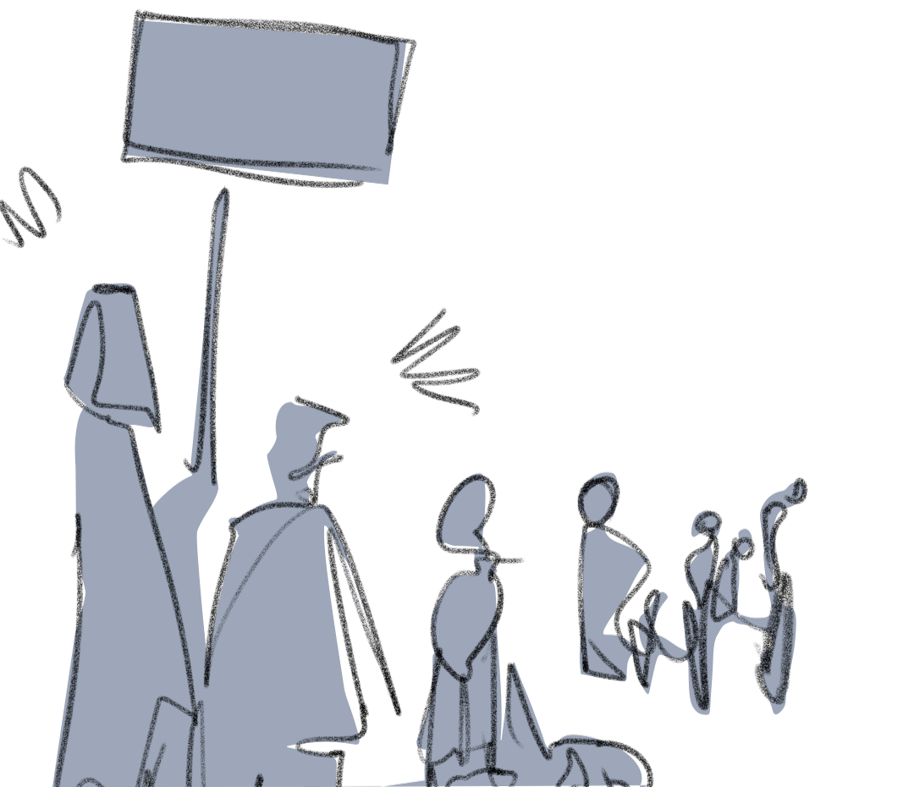
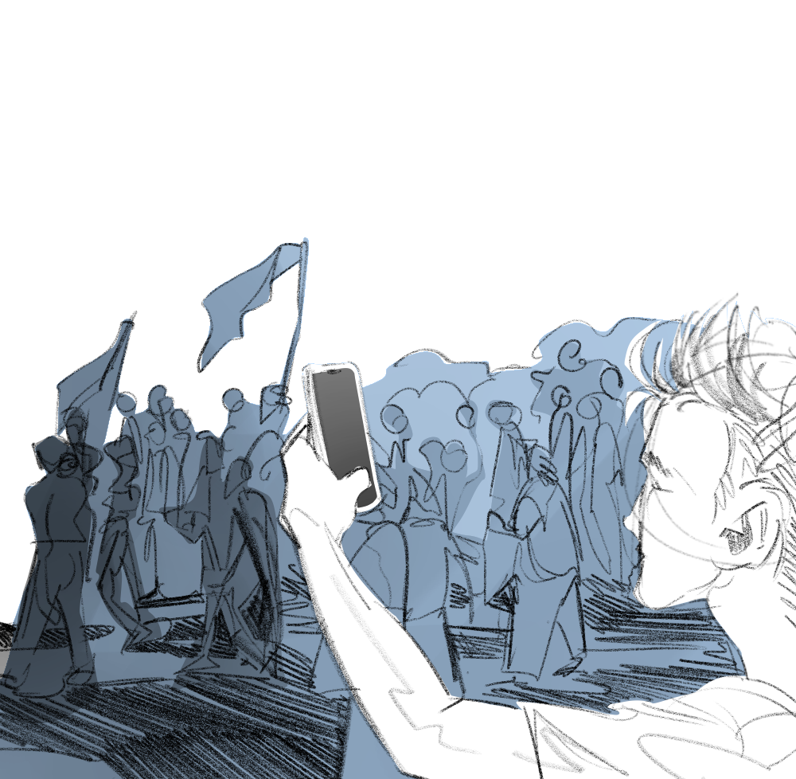

Start


Wer nicht springt, der ist für Acta.
Lasst euch nicht einschüchtern. Die JN haben
zwar nur wenig Zulauf,
aber sie trumpfen auf,
weil sie denken, dass sie für eine schweigende
Mehrheit sprechen. Wir als Zivilgesellschaft
müssen
deutlich machen: Das dulden wir nicht! Solange
Brigada weitermacht, werden wir auch weiter-
machen.
Wir werden am 09. November den
Rassisten, Flüchtlingsfeinden und Hassbürgern nicht die Sraße überlassen.
Wollen
wir ignorieren und wegschauen?
Oder wollen wir gemeinsam
deutlich Flagge zeigen?
Feuer mit Feuer
bekämpfen.
Die Wellen schlagen hoch.
Eingeladen sind Groß- und
Kleinkünstler, Musiker, Bands, Autoren
und andere Kulturschaffende, die mie Ihren
Auftritten zur Mitgestaltung einer bunten und
vielfältigen Protestkultur beitragen wollen. Zum
Protest gehört, dass man laut ist. Unsere Demokratie ist stark genug, um das auszuhalten. Braunschweig soll keinen Nährboden für Spaltung bieten. Es darf kein Prozess hinter verschlossenen Türen stattfinden. Es ist eine unglaubliche Provokation, dass die rechte Pegida ausgerechnet an diesem Tag des Gedenkens an die Reichspogromnacht mit ihren Hassreden und -rufen vor dem Rathaus auftreten wollen.